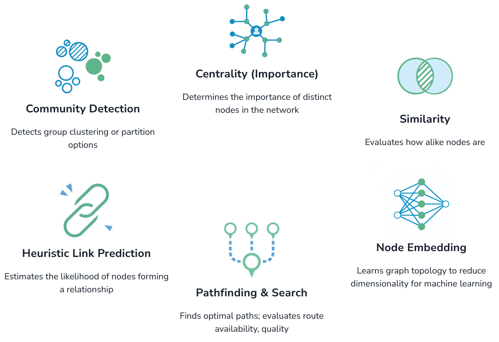
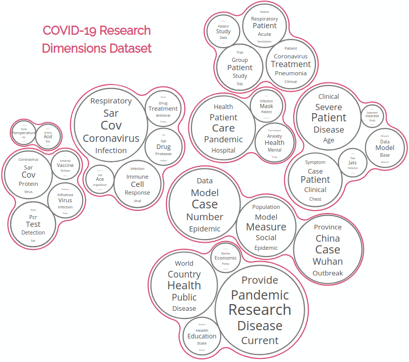

Hi!
I'm currently working as a Software Engineer in the Graph Data Science team at Neo4j. The GDS library source code is available in GitHub.
Mathematical imaging is at the core of modern data science, with important applications in medicine, biology, defense, agriculture and environmental sciences. This active research field studies imaging inverse problems involving the estimation of an unobserved true image from measurements that are noisy, incomplete and resolution-limited. My Ph.D. focused on the development of new Bayesian computation methodology for ill-posed high-dimensional inverse problems, with a focus on methods that tightly combine modern high-dimensional stochastic simulation and optimization, and which support advanced Bayesian analyses.
If you are interested in reading more about this you can see my PhD Thesis.
After my PhD I joined the Offshore Robotics for Certification of Assets (ORCA) Hub project as a Research Associate in eXplainable AI (XAI) and worked in developing transparent machine learning algorithms for NLP and topic modelling.
I worked in the Strategic Futures Laboratory. You can check out our topic map for exploring COVID-19 research.
You can find all my research code here on github.
Here is my Viva (thesis defense) presentation
Here are 2 powerpoint presentations on "Maximum likelihood estimation of regularisation parameters in high-dimensional inverse problems":